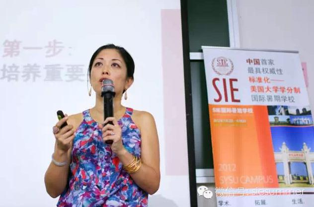
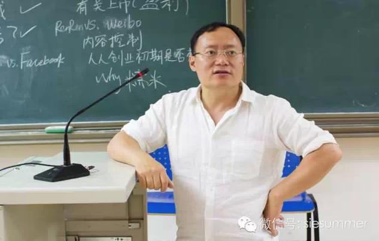

SIE国际暑期学校的商业领袖项目（Business Program，简称B.P.），是专为帮助留学生明确职业发展和就业前景而打造的高端项目——给同学们送上最前沿的商业理念、最贴心的职业指导，绝对是留学生不容错过的商业视听盛宴！商业领袖项目结合北美留学生们的专业、兴趣以及实用性等多方面因素，为留学生群体量身打造的高端职业项目，为大家提供职业发展指导、商业理念启蒙、人生方向导航等全方位指导。自2012年开始，每年的暑校期间，SIE均请来包括高盛、KKR、摩根大通、中金、路易威登、德勤等在内的行业高管和杰出代表们与暑校学员们一起进行交流和互动。从投行、私募基金到咨询、律所再到互联网、政府等各行各业，带给暑校学生们多角度全方位资讯，是暑校学生们在北美不容易接触到的活动。
探讨如何成为一名合格的世界公民：洛杉矶前副市长陈愉（Joy Chen）女士

作为一个在美国成长奋斗，最终成功融入美国社会并取得巨大成功的美籍华裔女性，陈愉女士通过自身的奋斗历程以及心得体会的分享，给刚到美国内心仍旧十分忐忑的留学生们上了一堂生动的美国文化融入课程。
陈愉女士从切身经历出发，紧扣“如何成为世界公民”的主题，为SIE国际暑校的同学讲述了自己作为美籍华裔在美国政界、商界的奋斗历程，包括了她如何奋斗成为众人瞩目的洛杉矶副市长的独特历程，以及其在政界、商界获得成功的法则。陈愉女士认为，虽然自己身为美籍华裔，属于美国少数人群体，但她通过自己的努力获得诸多方面的成功，得到社会的认可，其秘诀在于她培养了个人的重要技能和拓展了个人交际圈等。她分享的如何融入美国社会的经验和心得体会，得到了所有同学的共鸣，反响异常热烈。
讲述中国互联网人的成长故事：人人网董事长兼首席执行官陈一舟先生

作为一名在网络大潮中崛起的成功的创业人士，陈一舟先生自然也被很多同学们问到了他的创业史。陈一舟先生轻松的讲述了他前两次失败的创业经历，随后总结出一条宝贵的创业经验：不要做自己不擅长的事情。并且告诫有创业冲动的同学们，一定要认准自己擅长的事情，而且不要轻易离开，因为一个人是否成功就是要看他是否在某一个专业领域里做到了最好！
陈一舟先生以平等的姿态与同学们分享着自己的创业故事、个人经历和商业思路等，不仅给SIE国际暑期学校的同学们带来职场和未来人生的启示，更是让他们感受到了一位商界领袖的人格魅力。同时，陈一舟先生也对SIE国际暑校开设的B.P.项目给予了高度评价，他认为这样的形式是对学分课程一个特别好的补充，特别是对于留学生来说，早一步对未来规划，便能早一步把握未来。
SIE国际暑校举办的商业领袖项目还经常带领同学们进入各大企业进行参观。例如曾组织同学们参观人人网北京总部，直观了解互联网企业的工作流程和状态；也曾组织同学们去到全球四大会计师事务所之一的德勤上海总部，体验一名审计师忙碌的一天。
还未踏入职场的你，对每天出入摩天大楼的高级白领的一日有了解的兴趣吗？对各大公司的氛围有探寻的意向吗？感受一次作为学生感受不到的特殊经历，是不是会让你Feel Awesome！
通过SIE的商业领袖项目，同学们可以直接且平等的与商界翘楚、政界精英进行沟通，在他们给同学们答疑解惑的同时，也会真诚的给与相关的职业发展指导、商业理念启蒙等独特且珍贵的体验。能听到互联网、金融、投资、创业等行业最顶尖企业CEO们的分享、与商界大佬们亲密交流，SIE的商业领袖项目早已成为暑校课程中最令人期待的明星课程，深受每届暑校学生的好评。想知道今年的Business Program会给大家带来什么惊喜吗？请拭目以待吧。
田天 路易·威登中国总部公共关系部，媒体覆盖/中国区开店/活动策划/执行
徐一林 世达律所（美国排名前三律所），律师
赵亿阳 摩根大通投行部亚太工业组，资深分析师
舒韡 C2，创始人/CEO
王威扬 脉可寻，创始人/CEO
Jack Cao 新加坡主权投资基金淡马锡，投资副总监
Tayler Cox 哈佛大学商学院MBA与法学院JD；真格基金，投资经理；斯坦福大学硕士
司维 时差网，创始人/CEO
李黎 华兴风险投资，副总裁
杨晓颖 走秀网，战略发展总监
梁驰 长江商学院、哥伦比亚大学、北京大学硕士，复兴昆仲资本，高级投资经理
孟繁中 北京外国语大学双学士，华兴资本投资经理。曾任职于麦肯锡咨询公司、德勤会计师事务所等
余跃 南加州大学商学院学士，华创资本数字新媒体投资经理
陈露 毕业于耶鲁大学经济系，任职于世界顶尖管理咨询公司波士顿咨询公司
谭尚轩 创立海外房地产众筹平台“海众网”，曾任职于工商银行（中国）、Wall Street without Walls (WSWW)（美国）、汇丰银行（美国）
Tiger Yang 毕业于美国加州大学伯克利分校，Chinapex（创略中国）联合创始人